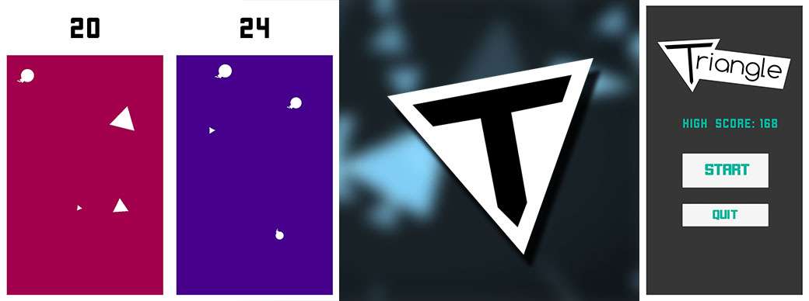

Triangle
Triangle was a personal project that I took on over the summer holidays of 2017 to help further my knowledge in Unity 3D. Through this project I gained skills in basic game animation, C# coding language as well as Game Scripting and Timing. So far I have exported the Game to Android and have it running on my mobile device. I found this project to be enjoyable as it was one of my first ‘Professional’ feeling projects.
Triangle also helped me form some base knowledge on Git and version control as I made commits throughout development of the outcome.